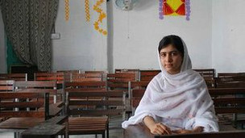

|
|

نوجوان کمپین تحصیل دختران پاکستان هدف تیراندازی قرار گرفت
چهار شنبه19 مهر 1391
بی بی سی: دختر ۱۴ ساله پاکستانی و از اعضای کمپین تحصیل دختران در منطقه دره سوات در شمال غرب هدف تیراندازی قرار گرفت و در اثر اصابت گلوله، زخمی شد.
ملالی یوسف زی هنگامی هدف حمله قرار گرفت که از مدرسه به خانه باز می گشت.
این دختر نامزد دریافت جایزه بین المللی صلح شده بود.
داستان زندگی و تجربه ملالی یوسف زی زمانی مورد توجه قرار گرفت که بخش اردو بی بی سی خاطرات او در خصوص زندگی تحت حکومت طالبان را در سال ۲۰۰۹ را در اختیار مخاطبان خود قرار داد.
ستیزه جویان طالبان کنترل دره سوات را در آن سال به عهده داشتند اما در پی عملیات ارتش در همان سال از این منطقه رانده شدند.
هنوز مشخص نیست که ملالی هدف این حمله بوده است زیرا هنگام تیراندازی، دست کم یک دختر دیگر نیز او را همراهی می کرد.
گزارشهای رسمی حاکی از آن است که وضع ملالی یوسف زی و دختر همراهش رضایتبخش است و خطری جان آن دو را تهدید نمی کند.
وقتی طالبان کنترل سوات والی را بر عهده گرفت و دستور داد مدارس دختران بسته شود ملالی فقط ١١ سال داشت.
او در خاطراتش که بیبیسی اردو آن را منتشر کرده از سختیهایی سخن می گوید که در دوران تسلط طالبان پاکستانی بر منطقه سکونت او بر آنها گذشت.
با خارج شدن قدرت از دست شبه نظامیان اسلامگرا در سوات، جایزه شجاعت به ملالی یوسف زی اهدا شد.
سال گذشته، این دختر پاکستانی در توضیح شرایط آن زمان به بیبیسی گفت: "دختران در زمان تسلط طالبان میترسیدند به صورتشان اسید پاشیده شود یا توسط این شبه نظامیان دزدیده شوند."
به گفته ملالی، در زمان تسلط طالبان پاکستانی بر منطقه سوات، برخی از دخنران بدون پوشیدن یونیفورم و با لباس معمولی به مدرسه میرفتند و وانمود میکردند به مدرسه نمیروند، کتابهایشان را نیز در زیر شالهایشان پنهان میکردند.
این دختر ۱۴ ساله گفته است میخواهد زمانی که بزرگ شد حقوق بخواند و وارد دنیای سیاست شود.